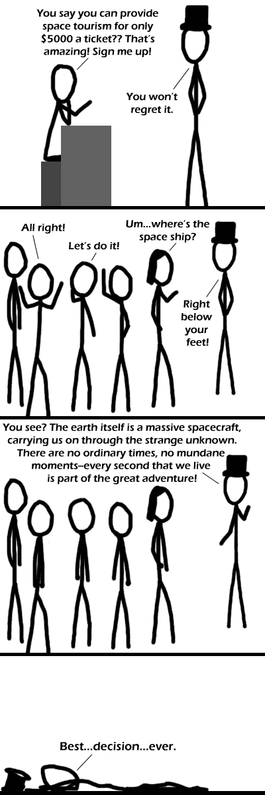

Comic JK 234
When I Feel Like It
⇤
<
?
>
⇥

⇤
<
?
>
⇥
Forum
.
RSS
.
Digg
.
Facebook
.
Reddit
.
Twitter
.
Stumbleupon
Enter your thoughts on number 234 here. Please, no trolling, trolling, or trolling. Is that... is that... BLACK HAT GUY???!!! It's Top Cat guy! > Abraham Lincoln! <-??? >> Are you implying that BFG (or his relative EFG) is Abe? Abe would never get beaten up! He could beat up Chuck Norrington! >>> The epic-ness of that battle would screw our vaginas. >>>>That would certainly fill our needs. God help us if they ever meet each other (assuming they can time-travel, which they can't).<<they totally can Somehow, I've found these comics funnier than the recent abcd comics. >Honestly, qwert has been in a low point, a slut, or whatever you want to call it: most of their recent ones haven't been that funny >>+1 I like pie cake > pie > True cake < 3.1415926535897932387626433832795028841971693993741058209749445... > True The cake is a lie, but Pi is truth. >No. That's irrational. >>It may be irrational but it's the truth >>>The truth? YOU CAN'T HANDLE THE TRUTH! >>>>Epic Fail, dude. Really. >>>>>It's a guy from Black Ice trying to get funding... >>>>>>Yeah, that's it. Wow, I'm up to 6 > signs already. >>>>>>>mammaluigi? >>>>>>>>I still think EFG is related to BFG; his plans sound similar, it's just they don't actually work. >>>>>>>>>8 > signs!!! btw, i think bhg is the anthropomorphic personification of badass awesomeness. trying to say he could actually get beaten by a few angry customers when even the winjas are almost helpless against him is blasphemy! it has to be EFG or an impersonator. anyone read diskworld here? ^ Pratchett ftw!!